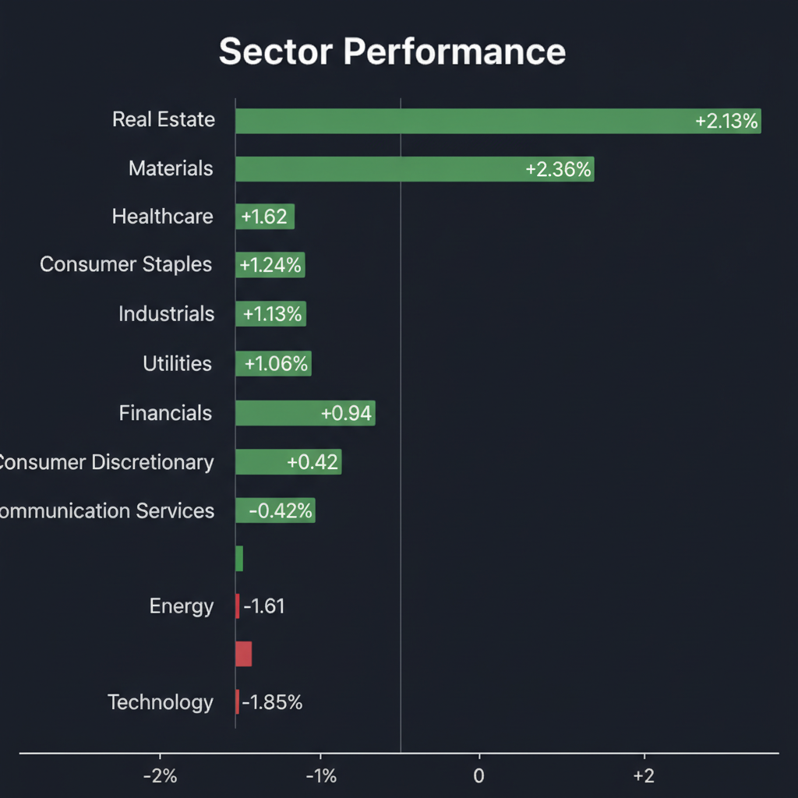
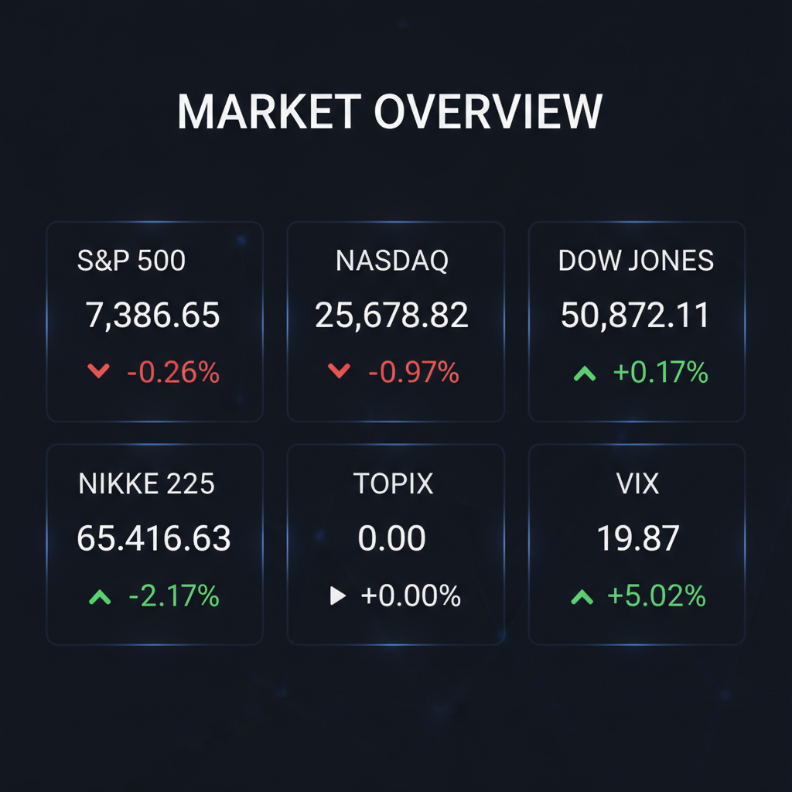

Daily Investment Report - 2026-06-10
Generated: 2026/6/10 7:39:40


投資チームミーティング最終レポート
1. エグゼクティブサマリー
地政学的緊張とインフレ再燃の懸念から、市場は成長株からディフェンシブ資産へ急速にシフトしています。
主要指数は調整局面に入っており、CPI発表を控えた市場は不安定なボラティリティの拡大に警戒が必要です。
現在は買い急ぐ局面ではなく、ポートフォリオの質を高めつつ、キャッシュポジションを厚く維持すべき局面です。
2. 注目銘柄リスト
強気（買い推奨）
- 現時点で強気（スコア7以上）の候補はありません。市場の不確実性が高く、特定の銘柄への集中投資はリスクが過大であると判断しました。
中立（様子見）
- 現時点で中立（スコア4-6.9）の候補はありません。
弱気（警戒）
- 三菱自動車工業 (7211.T) [平均スコア 2.2/10]: 業績の回復基調が不透明であり、新経営計画に対しても市場が失望しているため、当面は様子見が賢明です。
3. セクター推奨ランキング
1.
防衛・航空宇宙: 地政学的緊張の長期化により政府支出の優先度が高く、ボーイング等の個別企業の回復ストーリーも追い風。
2.
ヘルスケア: 景気循環の影響を受けにくく、インフレ環境下でも安定した収益が見込めるディフェンシブの要。
3.
生活必需品: 価格転嫁力が強く、インフレ下での利益率維持能力が高い。
4.
エネルギー（インフラ・タンカー限定）: 供給網の混乱を逆手にとり、インフラ輸送で安定収入を得る企業に限定。
5.
テクノロジー: 高金利環境が続く限り、バリュエーション調整（PER低下）が避けられないため、当面はアンダーウェイト。
4. 今週の注目イベント
- 5月第3週（水曜日）: 米国5月消費者物価指数（CPI）発表
- 随時: 中東情勢に関するイランおよび米政府の声明
- 随時: 主要テック企業の在庫調整およびクラウド受注に関する最新動向
5. リスク要因
- インフレ粘着性: CPIが予想（4.2%）を上回った場合、FRBのタカ派姿勢が強まり市場全体が下落するリスク。
- 地政学的ブラックスワン: ホルムズ海峡の封鎖等による原油価格の急騰と、それによるスタグフレーションの誘発。
- 流動性枯渇: テック株の投げ売りが連鎖し、中小型株への流動性が枯渇する「全銘柄売り」の発生。
6. アクションアイテム
- 株式比率を下げ、キャッシュポジションを20〜30%程度まで一時的に高めること。
- 保有銘柄の「営業利益率」と「負債比率」を精査し、利益率が低下傾向にある銘柄は即座に売却を検討すること。
- 直近安値から3〜5%下に機械的なストップロス（逆指値）を設定し、損失を限定すること。
- CPI発表前後の過度なボラティリティに備え、新規の買い増しは見送ること。
7. 米国株インデックス戦略
- 市場評価: 現在は調整局面であり、一部現金化を検討すべきです。特にCPI発表という大きな不確実性を前に、全額保持はリスクが高すぎます。
- 1〜3ヶ月の見通し: インフレと地政学リスクにより、レンジ内での不安定な動きが継続すると予想。明確なトレンドが出るまでは横ばい〜軟調な展開を想定してください。
- 積立投資への影響: 定期積立については、「時間分散」の観点から継続すべきですが、一括投資や追加のスポット買いは強く推奨しません。
- 注意すべきイベント: CPI発表およびFOMCの政策声明が、インデックスのトレンドを決定づける大型イベントとなります。
- リスクシナリオ: スタグフレーション入りによる大幅下落が発生した場合、パニック売りには加わらず、数年単位の長期視点で積立を継続しつつ、ボラティリティを利用して安値圏での積立枠を維持することが対応策となります。
Agent Scoring Matrix（Web調査後の合議評価）
各エージェントがWeb調査結果を踏まえて独立に10段階評価した結果です。平均7以上=強気、4〜6.9=中立、4未満=弱気。
| 銘柄 |
ファンダメンタルズアナリスト | テンバガーハンター | マクロエコノミスト | テクニカルストラテジスト | リスクマネージャー |
平均 |
判定 |
| 7211.T |
2
収益性低下、材料出尽くし感、リスク大 | 2
収益力脆弱、成長性乏しくリスク大 | 2
収益性低迷、成長性乏しくリスク高 | 3
業績回復不透明、市場の失望売り続く | 2
業績低迷、期待先行の限界、リスク高 |
2.2 |
弱気 |
Web Research Results (Google Search Grounding)
エージェントが推奨した中小型株について、Google検索で最新情報を調査した結果です。
7211.T
三菱自動車工業（7211.T）に関する最新情報は以下の通りです。
1. 企業概要
三菱自動車工業は、自動車およびその部品の開発、生産、販売、金融事業を主に行う日本の自動車メーカーです。特に4WD、SUV、電動車両技術に強みを持ち、SUV、EV、ミニバン、コンパクトカー、軽自動車、商用車など多岐にわたる車種を手掛けています。 国内自動車メーカーの中では7位のポジションにあり、ルノー・日産・三菱アライアンスの一員として、プラットフォーム共有や共同開発を進めています。 また、東南アジア市場での事業展開に強みを持っています。
直近の時価総額は、2026年6月5日時点で約4,936億円、または2026年6月9日時点で約4,900億円です。
2. 直近の業績・決算情報
三菱自動車工業は、2026年5月8日に2025年度通期（2025年4月1日～2026年3月31日）の連結決算を発表しました。
*
売上高: 2兆8,965億円（前年同期比3.9％増）
*
営業利益: 755億円（前年同期比45.6％減）
*
経常利益: 789億円（前年同期比20.0％減）
*
親会社株主に帰属する当期純利益: 100億円（前年同期比75.6％減）
2025年度は売上高は増加したものの、営業利益、経常利益、純利益は大幅な減益となりました。しかし、会社計画に対しては営業利益・経常利益ともに上回って着地しており、足元では収益性が改善傾向にあるとされています。
2026年度（2027年3月期）の連結業績予想では、売上高3兆2,600億円（前期比12.5%増）、営業利益900億円（同19.2%増）、当期純利益250億円（同149.6%増）を見込んでおり、業績回復が期待されています。
3. 最新ニュース・材料
直近の重要なニュースとしては、2026年5月8日に発表された2025年度通期決算が挙げられます。 決算発表後、2026年6月2日には、新中期経営計画の発表があったものの、市場には材料に欠ける印象を与え、株価が下落したとの報道がありました。
4. アナリスト評価・目標株価
2026年6月9日時点のアナリストコンセンサスは「中立」です。 11人のアナリストのうち、強気買いが1人、買いが1人、中立が6人、売りが2人、強気売りが1人となっています。
平均目標株価は394円で、現在の株価から約17.66%の上昇余地があると予想されています（2026年6月9日時点）。 また、別の情報では、12ヶ月の株価ターゲットは393.6円、高値予想は550円、安値予想は300円とされています。 日系大手証券は、2026年5月9日にレーティングを「中立」に据え置き、目標株価を400円としています。
5. リスク要因
三菱自動車工業が直面する主なリスク要因は以下の通りです。
*
競合: 中国メーカーの販売攻勢の激化により、市場シェアや販売台数に影響を受ける可能性があります。
*
規制: 米国の関税政策の直接・間接的な影響や、環境規制（EV化など）への対応が事業に大きな影響を与える可能性があります。 特に欧州を中心にバッテリー製造過程におけるデューディリジェンスの法制化の動きも進行しています。
*
財務上の懸念: 販売金融事業における破綻発生や回収不能額が想定を上回る場合、経営成績に影響を及ぼす可能性があります。 また、為替や金利の変動もリスク要因です。
*
地政学リスク: 中東情勢の緊迫化など、地政学的なリスクが事業環境に影響を与える可能性があります。
6. 株価の最近の動き
三菱自動車工業の株価は、2026年2月10日に年初来高値458.0円を記録し、2026年5月1日には年初来安値300.7円を記録しました。 直近20日前と比較すると約10.21%上昇していますが、直近5日前と比較すると約9.02%下落しています。 2026年5月8日の決算発表時点では306.7円でしたが、2026年6月9日の終値は334.0円となっています。 2026年6月2日には新中期経営計画の発表があったものの、材料に欠ける印象から株価が下落したと報じられています。